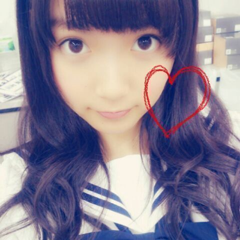
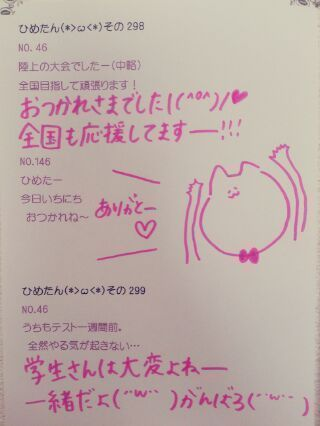

| 2013/08 26 Mon | ひめたん(*>ω<*)そ の332 |
＼ 愛されまあや × ひめたんびーむ ／

広島コンビだよー
愛されまあやだいすきよちゅちゅ///
乃木どこの話だけど
広島では今川焼を二重焼と呼ぶよー
といっても広島の中でもいろいろあるみたいで
まあやと意見が割れて不安だった(´・ω・｀)
二重焼派の方もいらっしゃったみたいで
安心しましたー♪
乃木のの聴いてくださったかなー？
なんか終始ふわっふわしてたけど
大丈夫だったかな(笑)
不安だったんだけどね、
ほんとに不安だったんだけどね
でもラジオのお仕事めちゃ好きなので
楽しんでやらせていただきました(*^ω^*)
びーむ党みなさんもおいでー♪
とゆことで乃木のの・乃木どこ
オンエア観てくださった方 報告ありがとーう
楽しんでいただけたみたいでよかったー
告知やめようと思ったとか言って
ほんとにごめんなさいごめんなさい←
昨日はひめたんデーだったね！やったね！
そんなひめたんは昨日は
乃木どこ収録に参加してきましたー∩^ω^∩
久々のおろし巻き！

午前中は課題もやったんだよー
夏休みももう終わりだから
時間みつけてやんないとねー♪
公演３日目 大阪！
明日行くよーって方
よろしくお願いします( ^ω^ )
一緒に楽しいライブにしようねー☆
ちなみに夏休みの課題は
いっこも持ってきてないよー！
いつもの質問コーナーに行く前に
なんか「どっちが〜なの？」多かったから
特設コーナー作りましたー
万理華、さゆりんご、真夏
あとねねころ(笑)
ご協力ありがとーうねー
 ひめたんの「ビーム」と
ひめたんの「ビーム」と
まりかの「がうっち」はどっちが強いですか？
がうっちは
そーゆーふうに使うもんじゃないからねー♪
by 万理華
すごくどうでもいいね(笑)
by ねねころ
ひめたんビームとさゆりんごパンチの
どちらが僕をメロメロさせてくれますか？
二つの力を融合すると
より強力なメロメロが
得られまーすヾ(＠⌒ー⌒＠)ノ
しかし強力すぎて
心に穴が空いた感覚に陥りやすく注意が必要です
by さゆりんご
ひめたんビームと真夏のズキュン
どっちが強いの？
ビーム界の頂点はひめたんビームなんだけど
ズキュン界の頂点だとやっぱりまなったんのズキュンになりそうですヽ(。・ω・。)ノ←
今度戦いましょう｀‐ω‐´)
by まなったん
いやーどうですかー面白いでしょー
こーしてみるとみんな技もってんなー！
それでは普通の質問返しどーん

 俺にエールをください！
俺にエールをください！
頑張ってください！
と言いたいところだけど、
無理はしてほしくないなー
だから80％で頑張ってください(｀・ω・´)
中国でいってみたい場所はありますか
どこがおすすめなんだろー
個人的にはショッピングとかしたい☆
生ちゃんの夜のテンションに
ひめたんは、どのように相手してますか？
ハモるから主旋歌って！と言われて
デュエットしたりとかよくあるかなー
まあ基本的にされるがままですよ
もちろん嫌いじゃないよー∪^ω^∪
...いやだからその、Mとかじゃないってば///
どーしたら
ひめきゅんさんのメンバーになれるの？
ひめきゅんさんの定義は一応
「ひめたんにきゅんきゅんしたら
ひめきゅんさん」ってことになっておるよー♪
AKB48のドラフト会議受けるんだけど
応募項目の中に「目標のメンバー」の欄に
「中元日芽香さん」って書いてもいいかな？
目標だなんて嬉しいけど
乃木坂メンバーの名前は書けるんだろうか...
どのくらいひめたんの事考えてたら
ひめきゅんって言っていいかな？
ひめたんのことちょっと気になってても
いっぱい気になってても
ひめきゅんさんに仲間入りしてくれたら
ひめたん喜んじゃうよー∩^ω^∩
静岡の印象ってどんな？？
金魚！
去年のお誕生日に静岡でお祝いしてもらったの
いまでも覚えてるよー( ^ω^ )
まいまい若月の故郷でもありますよねー♪
東京から割と近いイメージ！
いつかプライベートで行ってみたいですー
メンバーの中で誰と一番なかがいいのぉ？
みんな仲良しだよーと答えたいけど
そーゆーのは求めてないんだよねそーだよね
そうだなーひめたんのこと１番知ってるのは
いくちゃんだろうなーとは思うかな。
画像加工アプリはなに使ってますか？
camera360とかは
メンバーみんな結構使ってて
おすすめだよ( ´ ▽ ` )ノ
名古屋の個別ひめたん選んだけど、
よかったかな？
わーめちゃ嬉しいめちゃ嬉しい！
いっぱいお話しようねー☆
楽しみ楽しみるんっ♪
GOOD ROCKS! の写真展で
ろってぃー・ひめたんの写真が
みられるそうでーす＼(^^)／
確か１年前＼(^^)／

(＊´・ω・＊)
コメント(295)
2013/08/26 22:18